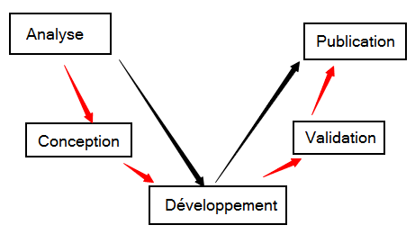
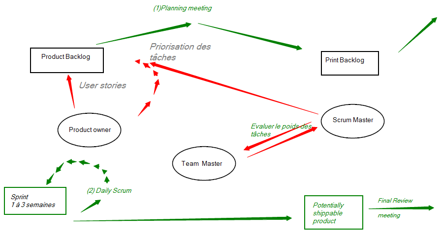

L'idée c'est de faire des choses en parallèle.
L'analyse est faite en amont.
Lorsqu'on est dans une méthode agile, on fait plus de chose.
L'origine d'Agile est un manifeste autour du code réutilisable.
Product owner : personne qui est en charge du dialogue avec le client
Scrum Master : très proche d'un chef de projet, à le rôle de rassembler tous le monde
Team Master : plus fonctionnel que
Product Backlog : idée de tableau de bord, user story : tout petit besoin de l'utilisateur
Print Backlog
Le travail en Scrum est représenté par des poids (les taches une quantité de travail et donc de temps) et non du temps.
Le poids définit le temps selon une action : simple / avec du code / nouvelle page / .....
Le poids est représenté de 1 à 8 mais souvent 1 à 5.

Créé avec HelpNDoc Personal Edition: Générer des livres électroniques EPub facilement